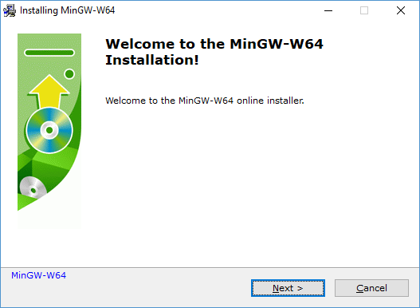
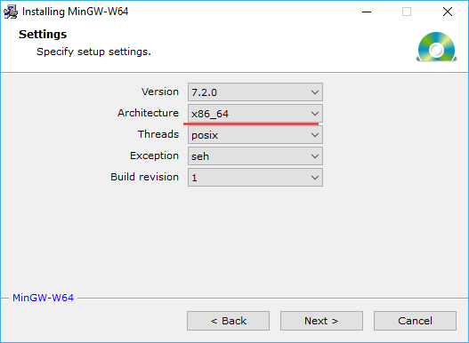
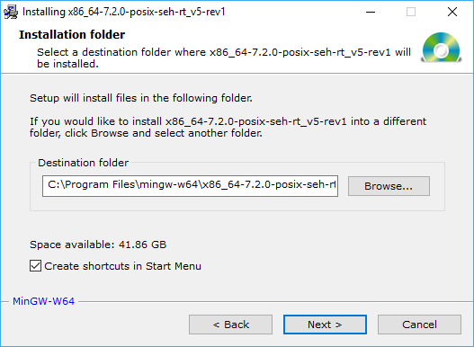
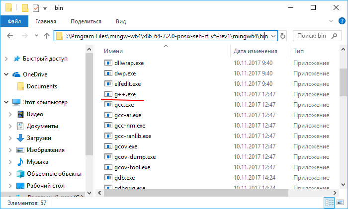
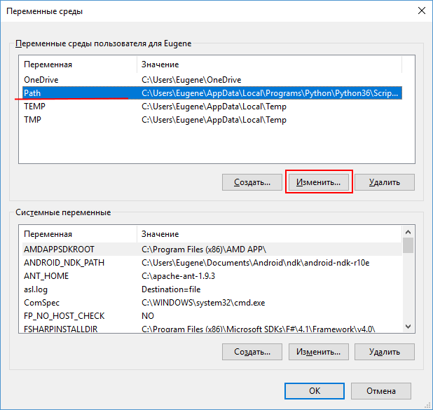
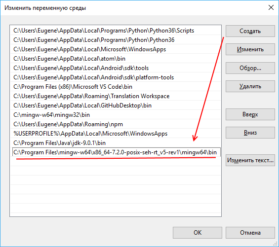
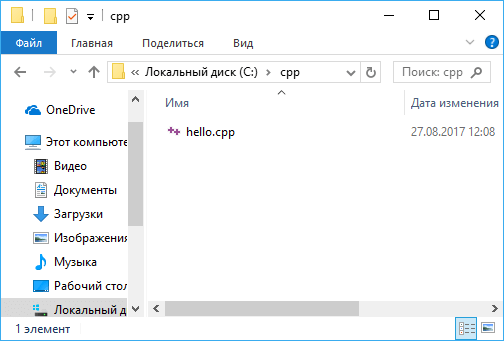
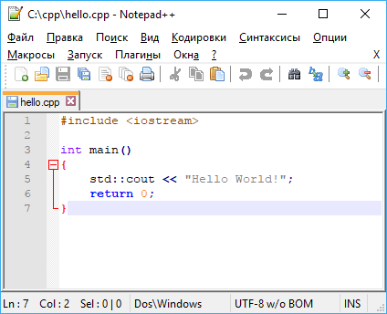
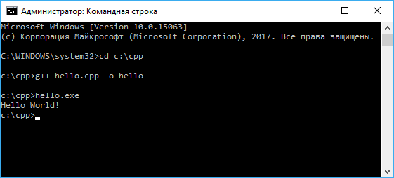

Первая программа на Windows. Компилятор g++
Для написания программ на языке С++ как минимум необходимы два компонента: текстовый редактор, с помощью которого можно набрать исходный код, и компилятор, который принимает файл с исходным кодом и компилирует его в исполняемый файл.
В качестве компилятора мы будем использовать один из наиболее популярных на сегодня компиляторов - g++, который доступен для разных платформ. Более подобному информацию о g++ можно получить на официальном сайте проекта gcc.gnu.org.
Набор компиляторов g++ распространяется в различных версиях. Одной из наиболее популярных версий является пакет средств для разработки от некоммерческого проекта Mingw-w64. Этот пакет содержит не только g++, но и ряд других компиляторов для других языков программирования. Для установки соответствующего пакета компиляторов загрузим файл установщика по ссылке https://sourceforge.net/projects/mingw-w64/files/Toolchains%20targetting%20Win32/Personal%20Builds/mingw-builds/installer/mingw-w64-install.exe/download
При запуске установщика откроется следующее окно:
Нажмем на кнопку Next > и перейдем к следующему шагу:
Если версия ОС 64-битная, то в поле Architecture следует выбрать пункт x86_64. Остальные настройки оставим по умолчанию и нажмем на кнопку Next >. На следующем шаге укажем путь, по которому будет устанавливаться пакет:
Можно оставить настройки по умолчанию. И после перехода к следующему шагу собственно начнется установка.
После завершения установки на жестком диске по пути, которое было выбрано для установки, появятся все необходимые файлы компиляторов. В моем случае они находятся по пути C:\Program Files (x86)\mingw-w64\i686-7.1.0-posix-dwarf-rt_v5-rev0\mingw32\bin:
В частности, файл g++.exe как раз и будет представлять компилятор для языка С++.
В зависимости от версии пакета точный путь может отличаться, но в любом случае все файлы будут располагаться по тому пути, который был указан на шаге установки.
Для упрощения запуска компилятора можно добавить путь к нему в Переменные среды. Для этого перейдем к окну Система -> Дополнительные параметры системы -> Переменные среды:
И добавим путь к компилятору:
Таким образом, мы установили компилятор и теперь мы можем написать первую программу. Для набора исходного кода потребуется текстовый редактор. Можно взять распространенный редактор Notepad++ или даже обычный встроенный Блокнот, либо какой-то другой редактор.
Итак, создадим на жестком диске С папку для исходных файлов. А в этой папке создадим новый текстовый файл, который переименуем в hello.cpp. То есть по сути файлы исходного кода на С++ - это обычные текстовые файлы, которые, как правило, имеют расширение cpp.
В моем случае файл hello.cpp находится в папке C:\cpp.
Теперь определим в файле hello.cpp простейший код, который будет выводить строку на консоль:
#include < iostream> // подключаем заголовочный файл iostream
int main() // определяем функцию main
{ // начало функции
std::cout << "Hello World!"; // выводим строку на консоль
return 0; // выходим из функции
} // конец функции
Для вывода строки на консоль необходимо подключить нужный функционал. Для этого в начале файла идет строка
#include < iostream>Данная строка представляет директиву препроцессора, которая позволяет подключить библиотеку iostream. Эта библиотека нужна для вывода строки на консоль.
Далее идет определение функции main. Функция main должна присутствовать в любой программе на С++, с нее собственно и начинается выполнение приложения.
Функция main состоит из четырех элементов:
- Тип возвращаемого значения. В данном случае это тип int. Этот тип указывает, что функция должна возвращать целое число.
- Имя функции. В данном случае функция называется main.
- Список параметров. После имени функции в скобках идет список параметров. Но в данном случае скобки пустые, то есть функция main не принимает параметров.
- Тело функции. После списка параметров в фигурных скобках идет тело функции. Здесь и определяются собственно те действия, которые выполняет функция main.
{
std::cout << "Hello World!";
return 0;
}
В теле функции происходит вывод строки на консоль. Для обращения к консоли используется стандартный поток вывода std::cout. С помощью оператора << в этот поток (в данном случае фактически на консоль) передается строка символов, которую надо вывести на консоль, то есть "Hello world!" .
В конце осуществляем выход из функции с помощью оператора return. Так как функция должна возвращать целое число, то после return указывается число 0. Ноль используется в качестве индикатора успешного завершения программы.
После каждой инструкции в языке C++ ставятся точка с запятой.
Каждая строка снабжена комментарием. Все, что написано после двойного слеша // представляет комментарий. Комментарий не учитывается при компиляции приложения, и не является частью программного кода, а служат лишь для его описания. Комментарий позволяет понять, что делает программа.
Теперь скомпилируем этот файл. Для этого откроем командную строку Windows и вначале с помощью команды cd перейдем к папке с исходным файлом:
Теперь скомпилируем этот файл. Для этого откроем командную строку Windows и вначале с помощью команды cd перейдем к папке с исходным файлом:
cd C:\cppЧтобы скомпилировать исходный код, необходимо компилятору gcc передать в качестве параметра файл hello.cpp:
g++ hello.cpp -o helloДополнительный необязательный параметр -o hello указывает, что скомпилированный файл будет называться hello.exe. Если не указать этот параметр, то файл будет называться по умолчанию - a.exe.
После выполнения этой команды будет скомпилирован исполняемый файл, который в Windows по умолчанию называется hello.exe. И мы можем обратиться к этому файлу, и в этом случае консоль выведет строку "Hello World!", собственно как и прописано в коде.
 Лабораторная №1
Лабораторная №1